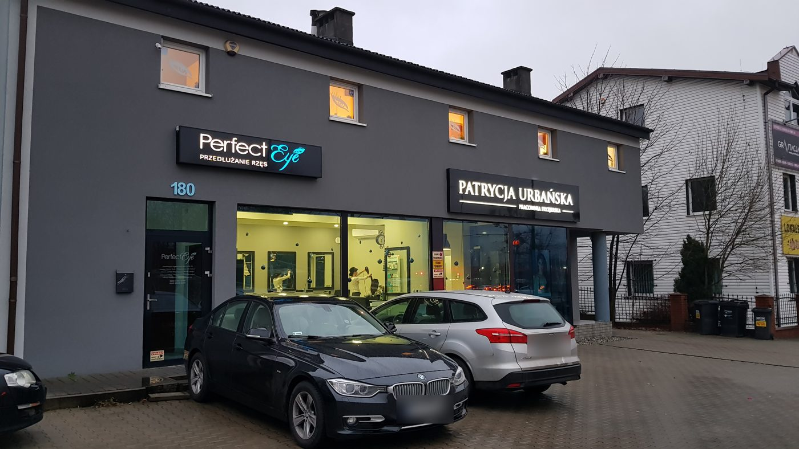

Kontakt
PerfectEye Dorota Górecka
ul. Tadeusza Kościuszki 180, 1 piętro
40-525 Katowice-Brynów
600 102 689
Jeśli nie odbieramy, jesteśmy w trakcie zabiegu – oddzwonimy.
Godziny: Pon–Pt 8:00–20:00 · Sob 8:00–13:00
Parking: Bezpłatny parking pod salonem
Social media: Instagram @perfecteye.pl · Facebook

Wejście od strony parkingu, salon na 1 piętrze. Parking jest bezpłatny.
Zasady wizyt
Najszybciej przez Booksy – widzisz wolne terminy i rezerwujesz od razu. Możesz też zadzwonić lub napisać na Instagramie.
Przedpłata gwarantuje Twój termin – rezerwujemy dla Ciebie czas specjalistki i aparatury. Jest odliczana od ceny zabiegu.
Przez Booksy lub telefonicznie, najpóźniej 24 godziny przed wizytą – wtedy przedpłata przechodzi na nowy termin. [Do potwierdzenia przez salon: zasady przy późniejszym odwołaniu.]
[Do uzupełnienia: gotówka, karta, BLIK.] Fakturę wystawiamy na życzenie.
Zabiegi rzęs trwają 1,5–2,5 godziny i wymagają spokoju, dlatego prosimy o wizytę bez dzieci. Dziękujemy za zrozumienie.